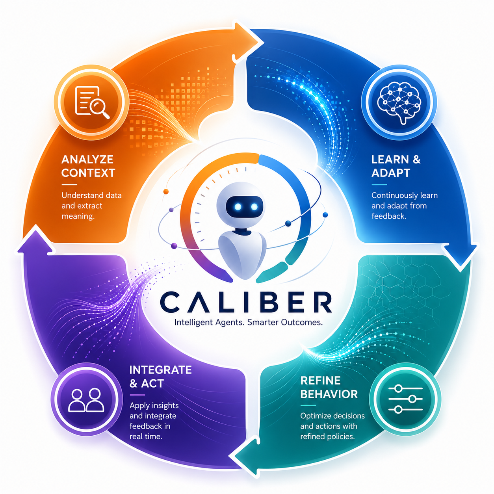

CALIBER : Contextual Adaptive Lifecycle for Intelligent Build, Evaluation, and Refinement
CALIBER is an MLflow-integrated ASGI control plane and application for teams shipping LLM agents to production. Author prompts, tools, skills, MCP servers, knowledge bases, and visual workflows — then test, calibrate, deploy, and observe them through asset-specific controls. Where eval-only tools stop at a score, CALIBER connects measured prompt proposals to explicit review and apply, while each other asset family exposes the lifecycle controls it actually implements.
Design principles
Ten principles govern what CALIBER builds and what it refuses to build. They are ordered deliberately — purpose and trust first, then capability and architecture, then operational quality, and finally technology choices and longevity. When two pull against each other, the lower number wins. The canonical statement, with the mechanism that discharges each one, lives in the layered architecture.
- Governed Agentic WorkflowsBuild agentic workflows with governance, security, compliance, and policy enforcement at the core.
- Progressive AutonomySupport the path from human-led processes to fully autonomous agent-driven execution.
- Auditability & ObservabilityMake every workflow, decision, and agent action traceable, transparent, and explainable.
- Evaluation by DesignBuild in testing, verification, validation, benchmarking, calibration, and optimization from the start.
- Open & ExtensibleIntegrate easily with enterprise systems, AI models, tools, and external agent platforms through open APIs and SDKs.
- Modular & ComposableUse loosely coupled components that are reusable, flexible, and easy to extend.
- Scalable & ReliableDeliver enterprise-grade performance, resilience, and operational reliability.
- Open-Source FirstPrefer proven open-source building blocks with strong community support.
- Developer & User FriendlyProvide a clear, productive experience for both developers and business users.
- Future ReadyDesign for evolving AI capabilities, orchestration patterns, and enterprise needs.
Documentation paths
Start from the task you are doing, not from the repository folder layout. Platform docs explain how CALIBER works, REST API docs explain the raw HTTP contract, Python SDK docs explain the typed client, and Examples show complete runnable flows.
No documentation cards match that search yet.
Platform docs
Architecture, authoring, runtime, evaluation, operations, and Aria. Use this section to understand how CALIBER works.
REST API
Use this section for the raw HTTP contract: route prefixes, auth headers, envelopes, and the served OpenAPI documents.
Python SDK
Use this section when you are integrating from Python and want typed resources, waiters, retries, and executable examples.
Examples
Start here when you want complete runnable flows instead of individual API or architecture pages.
Strategy & roadmap
Where CALIBER sits in the market, and the feasibility-grounded plan for where it goes next.
Quick start
The current repository supports two real launch paths. The full suite path brings up the containerized
platform around CALIBER. The plugin path runs the MLflow plugin directly and is the tighter loop for local
development inside caliber/.
Recommended when you want the complete local platform: MinIO, Postgres, MLflow, MLflow AI Gateway, and CALIBER.
make setup
make start
# CALIBER UI: http://127.0.0.1:5001/caliber/
# MLflow UI: http://127.0.0.1:5000
# AI Gateway: http://127.0.0.1:5002/api/2.0/endpoints/The repo-root launcher uses start.sh and the container stack defined under deploy/. It also prepares the Allure report mount used by the in-product observability surface.
Recommended when you want the plugin alone with a shorter local edit-test loop.
cd caliber
make install
make dev
# CALIBER UI: http://127.0.0.1:5000/caliber/
# CALIBER API: http://127.0.0.1:5000/ajax-api/2.0/mlflow/caliber/Optional frontend HMR stays separate:
cd caliber/caliber-ui
npm install
npm run devadmin / admin only while the account table is empty. Change it immediately in
Administration. The product default keeps CALIBER_AUTH_BOOTSTRAP_ALLOW_INSECURE_DEFAULT=false;
a network-reachable deployment must provide a strong bootstrap password source instead.
GET /health for a liveness check and
GET /readiness to confirm backing dependencies and provider posture after either launch path.
curl -s http://127.0.0.1:<port>/ajax-api/2.0/mlflow/caliber/readiness | jqAria: the agentic copilot
Aria is CALIBER's embedded copilot, not a separate service. On the OpenAI and Anthropic (Claude) engines it
runs a real tool-calling loop: within a single turn it reads live CALIBER state, executes and observes real
capabilities, and iterates before it answers — the same run, observe, fix shape a code assistant
uses. It owns session state, message history, attachments, intent plans, and draft governance, and persists
per-session interaction-mode and approval-mode choices (routes under /assistant). For larger
work it can also take a stated goal, decompose it into a durable, reviewable plan
of capability-bound steps, and walk that plan under supervision — pausing mid-run for permission, enforcing
separation of duties on gated steps, parking on long-running jobs, and escalating below-gate results (routes under
/aria/plans).
Agentic tool loop
On OpenAI and Claude, Aria reasons, calls read/execute tools, observes the result — including a workflow run's MLflow trace — and iterates within the turn, bounded to eight tool steps.
Permissioned tools
A per-turn toolset is gated by interaction mode × approval mode: read tools in every mode, reversible or subprocess-contained tools in build + auto_safe, and admitted mutations or real runs in build + auto_all. Draft approval and publication are withheld from every synchronous turn.
Develop and test any artifact
Aria can preview-run and patch workflows, run a tool draft in the bounded subprocess runner, query a knowledge base, and create an eval dataset from the conversation then score a prompt, tool, workflow, or skill against it.
Governed drafts
Drafts use validate, test, approved-status, and publish via /drafts/{draft_id}/*. A human performs approval and publication in the draft lifecycle UI/API; gated registry capabilities pause durable plans, and prompt-alias publication retains its separate approval-provenance control.
Sessions, queue, and steer
/assistant/sessions, /messages, and /queue persist active work, queued follow-ups, and priority steering messages, with attachments and chat history.
Transparent execution
Each turn persists the executed tool_calls and a compact process_steps trail, so an operator can see exactly which actions Aria took and how the turn resolved.
Goal-plan orchestration
For multi-step work Aria decomposes a goal into a durable plan and walks it under supervision: it pauses mid-plan for an explicit approve/deny interaction, enforces separation of duties on gated steps, parks on long async jobs (a background worker resumes them), and escalates below-gate results instead of silently passing. Routes under /aria/plans.
sequenceDiagram
participant U as Operator
participant API as /assistant/*
participant SVC as AssistantService
participant ENG as Engine (OpenAI / Claude)
participant T as Permissioned toolset
U->>API: POST /assistant/sessions/{id}/messages
API->>SVC: resolve session, mode, approval mode, attachments
SVC->>ENG: run_turn(request, toolset)
loop until done (max 8 tool steps)
ENG->>T: call a tool (read / preview-run / evaluate / publish)
T-->>ENG: observed result (e.g. run trace, scores)
end
ENG-->>SVC: reply, draft_deltas, tool_calls
SVC-->>U: message, drafts, and the recorded actions
/aria/plans) is the durable, interruptible path: it persists every step,
can pause mid-plan for an explicit approve/deny interaction, enforces separation of duties on
gated steps, and resumes from where it stopped — including after a long async job finishes.
Aria persists tool calls and a post-turn
process_steps trail (Thinking, Actions, Drafted, Tested, Review required), but does not yet
expose a token-by-token streaming transcript.
Verification and calibration
CALIBER's trust model is built around measured change. Prompts and skills use queued, optimizer-backed refinement; workflows use bounded manifest search and replay in the queued job shell. Tools use a different calibration algorithm: deterministic replay of an immutable definition-and-case snapshot through the configured execution backend. The tool suite is exposed inline and through durable queued jobs; both revision-fence attribution so edited definitions cannot inherit stale evidence.
flowchart LR
SIG[Calibration request]
VI[Verification item]
JOB[Refinement job]
WRK[Refinement worker]
CAND[Asset-specific candidate or search]
EVAL[Asset-specific evaluation and gate]
READY[Candidate ready]
APPLY[Apply]
CKPT[Checkpoint anchor]
RB[Rollback]
SIG --> VI --> JOB --> WRK --> CAND --> EVAL --> READY --> APPLY --> CKPT --> RB
| Asset | Entry point | Execution model | Outcome |
|---|---|---|---|
| Prompts | /prompts/calibration/options/prompts/calibration/runs |
Queued refinement job | Candidate-ready prompt change or rejected run |
| Skills | /skills/{skill_id}/calibrate |
Queued refinement job | Agent-free candidate generation against a hidden runtime target |
| Tools | /tools/{tool_id}/test-cases/tools/{tool_id}/calibrate/tools/{tool_id}/calibration-jobs |
Inline thread-pool run or durable drain + poll | Job/result history; pass-rate attaches to the tool only at the submitted revision |
| Workflows | /workflows/{workflow_id}/calibration/options/workflows/{workflow_id}/calibration/runs |
Queued workflow calibration | Patch candidate for review and follow-on apply |
apply, not a generic approval-vote API. Jobs that clear the gate land at
candidate_ready and move live via POST /jobs/{job_id}/apply. Workflow runtime
approvals under /workflow-runs/* remain separate because they govern live execution rather
than offline artifact promotion.
Test-set-driven evaluation, conversationally
The same evidence loop is available to Aria as gated tools, so quality can be measured in a conversation
rather than only through the calibration job. Aria assembles a dataset of representative
{input, expected} cases from the conversation and attachments with
create_eval_dataset, then scores an artifact against it: run_quick_eval for a
prompt, evaluate_tool_draft for a tool (subprocess-contained, scored against expected),
evaluate_workflow_draft for a workflow (structural quality, tool-adherence, completion, and
safety), and evaluate_skill_selection for skill-selection accuracy. Scores come from the real
scorecard and calibration scorers — never fabricated — and the tools stay inside the
auto_safe permission tier.
Workflow runtime and QA
The QA plan architecture intentionally separates three planes: runtime QA for artifacts, runtime approvals for live workflow execution, and engineering validation for the repository itself. They converge only at the evidence layer, which is how CALIBER can distinguish "this candidate should not be applied" from "this code change should not ship" while still presenting one operator-facing quality story.
flowchart LR
subgraph RuntimeQA[Runtime QA and workflow control]
FB[Trace feedback]
VQ[Verification items]
RJ[Refinement jobs]
AP[Apply and rollback]
WR[Workflow runs]
RA[Runtime approvals]
CK[Run checkpoints]
FB --> VQ --> RJ --> AP
WR --> RA
WR --> CK
end
subgraph EngValidation[Engineering validation]
DEV[Developer or CI]
MK[Test entrypoints]
PY[Pytest]
VT[Vitest]
PW[Playwright]
DEV --> MK --> PY
MK --> VT
MK --> PW
end
PY --> AL[Allure report]
VT --> AL
PW --> AL
AL --> OBS[Observability report]
Live workflow execution uses queued runs, lifecycle events, checkpoints, resume paths, and runtime
approvals under /workflow-runs. Engineering validation uses repo-root orchestration
(make test, ./test-all.sh, make allure-report) and merges backend,
UI, and browser evidence into the Allure report CALIBER serves in-product.
make test
./test-all.sh
make allure-reportChoose the right documentation path
The current docs are split by developer intent rather than by repository folder. Start with the section that matches how you are integrating, then drop into lower-level details only when you need them.
Platform docs
Architecture, authoring, evaluation, operations, and Aria. Use this when you need to understand product behavior and system boundaries.
REST API
The raw HTTP contract: route families, auth headers, envelopes, errors, and the served OpenAPI documents.
Python SDK
The typed Python client for CALIBER automation, with resource wrappers, retries, waiters, and executable examples.
Examples
Cookbooks, SDK-native recipes, and walkthroughs for end-to-end scenarios.
Configuration
Runtime configuration is rooted in CaliberConfig, surfaced through environment variables, and
exposed in-product through the Settings pages. The most important settings are the ones that shape process
identity, storage, outbound routing, async execution, and Aria's engine posture.
| Env var | Role | Why it matters |
|---|---|---|
CALIBER_DATABASE_URL |
Metadata store | Backs assistant state, jobs, workflow runs, KB state, audit, and the rest of CALIBER's durable control-plane rows. |
CALIBER_WORKFLOW_STORAGE_* |
File and artifact storage | Selects local or S3/MinIO-backed storage, endpoint URLs, credentials, limits, signed URLs, and retention behavior. |
CALIBER_ASSISTANT_ENABLED |
Assistant availability | Enables or disables Aria as a product surface. |
CALIBER_ASSISTANT_ENGINECALIBER_ASSISTANT_MODEL |
Assistant provider selection | Selects Aria's engine and model. The default is auto, which resolves to a real provider by available API key (OpenAI, then Anthropic); explicit values are openai, anthropic, and ollama. The fake engine is test-only. OpenAI and Anthropic run the full agentic tool loop; Ollama is single-shot. |
CALIBER_WORKFLOW_RUN_QUEUE_ENABLED |
Workflow execution model | Controls whether workflow runs are accepted and processed through the queued runtime path. |
CALIBER_SERVICE_INVOKE_MAX_BODY_BYTES |
Published-service request bound | Caps the raw streamed JSON envelope for protected and explicitly public workflow services (1 MiB by default). It bounds per-request parse/memory work, not ingress IP or connection rates. |
CALIBER_KNOWLEDGE_BUILD_QUEUE_ENABLED |
Knowledge-base build queue | Turns durable queued KB build processing on or off. |
CALIBER_GATEWAY_URI |
Gateway endpoint discovery | Tells CALIBER where to probe for external endpoint inventory. Guardrail governance uses the MLflow tracking store; usage comes from traces; pricing overrides are database-backed. |
CALIBER_LLM_BASE_URL |
Outbound routing | Controls whether CALIBER itself sends LLM traffic to providers directly or through the gateway. |
CALIBER_ADMIN_USERS |
RBAC assignment | Declares admin identities; operator and approver lists follow the same config-driven pattern. |
CALIBER_ALLURE_REPORT_DIR |
Report serving | Points the observability report route at a filesystem or object-store-backed Allure HTML directory. |
Observability and operations
Observability in CALIBER is broader than traces. The current platform exposes trace browsing and feedback, metrics, live event streams, durable SLO incident history/routing, accepted-webhook/dead-letter recovery, gateway governance/usage/pricing, backing-service visibility, and merged test evidence. The key design choice is that these are served surfaces over real runtime state and built artifacts, not placeholder dashboards.
Trace and feedback surfaces
/observability/traces, trace detail, and trace feedback routes bridge MLflow runtime evidence into CALIBER quality workflows.
Metrics and live events
/metrics exports Prometheus metrics, while /events/stream pushes SSE updates for active product surfaces.
Service and recovery truth
/gateway/* and /system/services expose external-gateway governance and backing-service health; /system/incidents and /system/webhook-dead-letters retain actionable failure history.
Allure evidence
/observability/allure-report serves the merged report after the repo's backend, UI, and E2E suites emit results and build HTML.
make allure-report or the UI scripts first, then inspect the report
through the observability route.
Security
CALIBER defaults to its own server-validated session login: passwords are stored as scrypt hashes and a
successful login issues a revocable HttpOnly session cookie. In this mode
X-CALIBER-User is ignored. A deployment behind a real identity proxy can explicitly select
trusted_header mode and require a shared proxy secret; direct access to the app port must then
be blocked. Route-specific project visibility and write guards apply explicit scope checks rather than trusting a client assertion; coverage is path-specific rather than a repository-wide isolation guarantee.
| Scope | Current meaning |
|---|---|
| viewer | Implicit for authenticated users; admits viewer-scoped reads where a route exposes them, subject to path-specific visibility controls. |
| operator | Artifact mutation, workflow runtime control, Aria operations, evaluation runs, apply, rollback, and most write paths. |
| approver | Higher-sensitivity approval surfaces where the route explicitly asks for approver authority. |
| admin | Administrative mutation such as user-list authority, object-store administration, MCP server administration, and cross-project power paths. |
Scope assignment is currently config-driven through the user lists in CaliberConfig. The
loopback launchers' first-boot admin / admin convenience must be rotated before
exposure; network deployments leave the insecure-bootstrap flag off and supply a strong secret. Because
CALIBER is same-origin with MLflow in plugin mode, TLS, cookie, proxy, and direct-port controls remain part
of the deployment boundary.
FAQ
Must CALIBER be a separate microservice?
No. The same ASGI application supports two topologies: an embedded MLflow mlflow.app that shares its process, or a standalone CALIBER service that reaches vanilla MLflow over HTTP. The bundled loopback Compose stack uses standalone mode and separate logical databases.
Does CALIBER ship its own gateway?
No. CALIBER does not proxy model traffic itself. Its Gateway surface discovers the external MLflow AI Gateway, governs tracking-store guardrails, derives usage from traces, and maintains pricing overrides. Discovery uses CALIBER_GATEWAY_URI; actual outbound routing uses CALIBER_LLM_BASE_URL.
Does Aria stream its internal thinking?
Not in the current route surface. Aria persists a final assistant message, tool-call transparency, and a compact post-turn process_steps trail, but not a live token-stream reasoning transcript.
Where does promotion happen now?
For candidate-ready calibration jobs, promotion happens through POST /jobs/{job_id}/apply. Direct prompt authoring stays non-live; releasing a chosen immutable version uses POST /prompts/{name}/aliases/{alias}. Prompt alias paths commit an idempotent operation before calling MLflow, and operators can inspect or reconcile incomplete outcomes under /releases/operations. Live workflow approvals remain under /workflow-runs/* because they govern running executions, not offline artifact apply.
How do I publish test evidence into the product?
Run the repo test entry points so they emit Allure results, build the combined report with make allure-report, and then open /observability/allure-report from the running CALIBER backend.